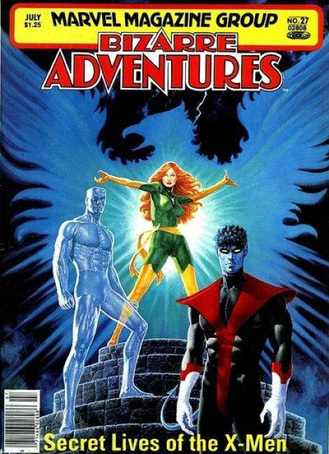
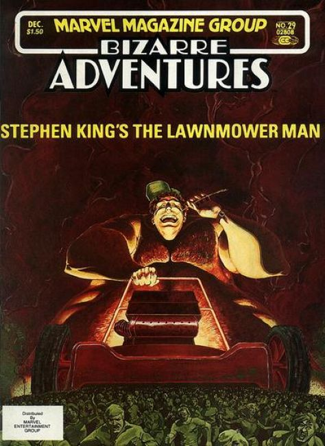
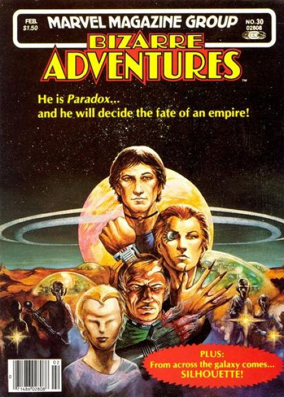
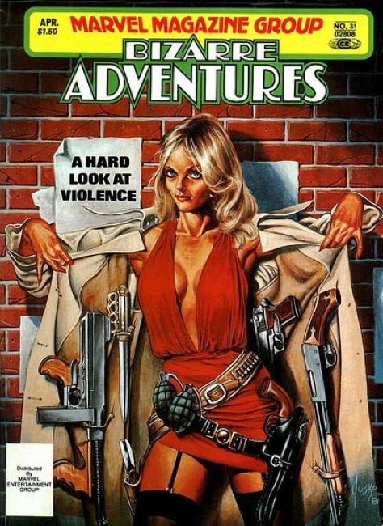
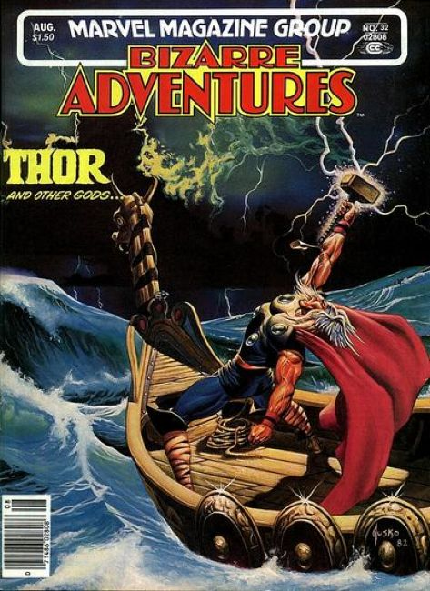
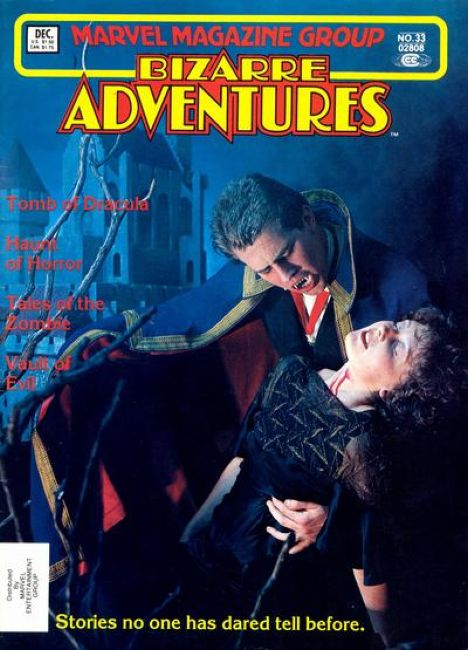
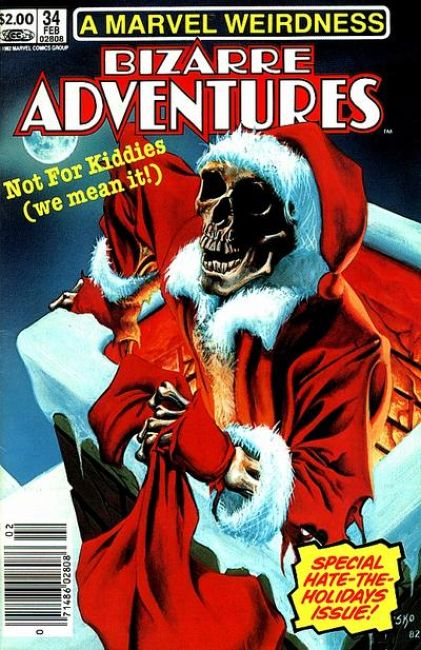

10 issues #25-34 1981 Marvel
Cover: Paul Gulacy
×







❮
❯
Marvels 1970s prestige magazine Marvel Preview morphed into this early 80s effort to present cutting-edge material that did not have to meet the Comics Code. The numbering begins with Marvel Preview #1-24
Issue #1:
- Lethal Ladies. The Black Widow in I Got the Yo-Yo... You Got the String., written by Ralph Macchio, with art by Paul Gulacy.
- Daughters of the Dragon in Safe Streets, written by Chris Claremont, with art by Marshall Rogers and Bob McLeod
- Lady Daemon in By Virtue of Blood! written by Claremont, with art by Michael Golden and Terry Austin.